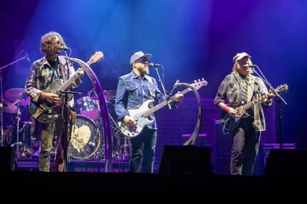

N eil Young’s second headlining appearance at Glastonbury has a turbulent history, even before you get to his publicly expressed fear that, despite being a Canadian with American citizenship, he won’t be allowed back into his adopted homeland because of his criticism of Donald Trump.
He announced that he was dropping out of the festival even before the lineup was announced, having picked a slightly baffling fight with the BBC over their coverage of the event, which he described as a “corporate turnoff”. Two days later, he announced he’d changed his mind, although the wrangling over whether or not the BBC would be allowed to livestream his performance seems to have gone down to the wire: last week they issued a statement saying they wouldn’t, but in the event the live stream went ahead.
A man who’s been conducting his career according to his own baffling internal logic for the best part of 60 years, Young clearly sees no reason to change his approach as he nears 80: not for nothing is his online blog called the Times Contrarian. It lends a certain frisson to his Glastonbury appearance: as longstanding fans will tell you, with a mixture of weariness and fond admiration, you never quite know what he’s going to do, although what the floating voters who invariably make up a significant percentage of a Glastonbury audience will think of it is anyone’s guess.
Neil Young and his bandmates the Chrome Hearts.Photograph: Jonny Weeks/The Guardian
He takes the stage clad in a tattered plaid shirt, jeans and a Casey Jones hat pulled down over his face: in old age, he increasingly looks less like a rock star than a mechanic from a small American town who distrusts anyone not born within a mile radius of its centre. He dispatches a version of Sugar Mountain on acoustic guitar, before the Chrome Hearts arrive. This is essentially his earlier outfit Promise of the Real augmented by 82-year-old keyboard player Spooner Oldham, a man whose career stretches back to Aretha Franklin and Wilson Pickett’s legendary late 60s albums. They may well be the best backing band Young has assembled since Crazy Horse, their sound simultaneously tumultuous and lumbering and heavily distorted.
Cinnamon Girl, from 1969, and 1990’s Fuckin’ Up alike conclude with lengthy barrages of noise: during the latter, guitarist Micah Nelson creates feedback by throwing this guitar into the air. At their best, they’re impossibly thrilling. Young’s lengthy guitar solos have an impassioned, almost caustic quality, and the sense of the musicians huddled together at the centre of the stage sparring off each other is really striking.
At one point, it seems as if Young is going to start rolling out one venerable classic after another, to general delight: a version of Hey Hey, My My (Into the Black) is followed by an acoustic section featuring The Needle and the Damage Done and a lovely, lambent take on Harvest Moon provokes the audience into singing softly along.
But simply playing a crowd-pleasing selection of what you might broadly describe as the hits wouldn’t be very Neil Young: instead, he throws in Sun Green, a painfully slow, musically unchanging track from his coolly received, ecologically themed early 00s concept album Greendale. It has 18 verses, and lasts so long that you’re occasionally gripped by the very real fear they’ll still be up on the Pyramid stage playing it long after the festival has ended. Some of the floating voters take this as a cue to see what’s happening elsewhere on site. But then he plays Like a Hurricane, accompanied by Nelson playing a keyboard that seems to be suspended from the roof of the stage.
An acoustic version of Old Man is warmly received yet makes for a weirdly downbeat end to the set, but an encore of Rockin’ in the Free World offers what you might call the full festival experience. The screens keep flashing on to the audience: there are people on their friends’ shoulders singing along. A suitably inscrutable onstage presence for most of the night, Young is visibly enjoying himself. He leaves the stage having headlined Glastonbury in a manner entirely in keeping with his longstanding reputation.